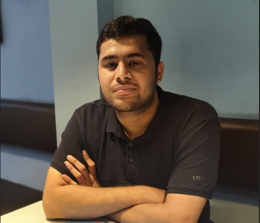
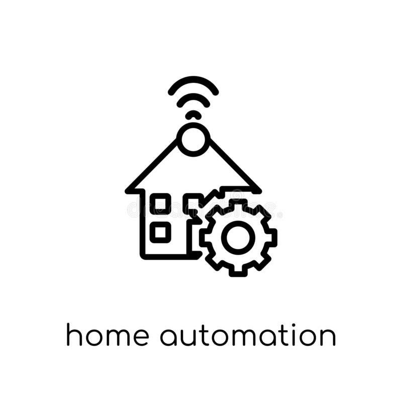
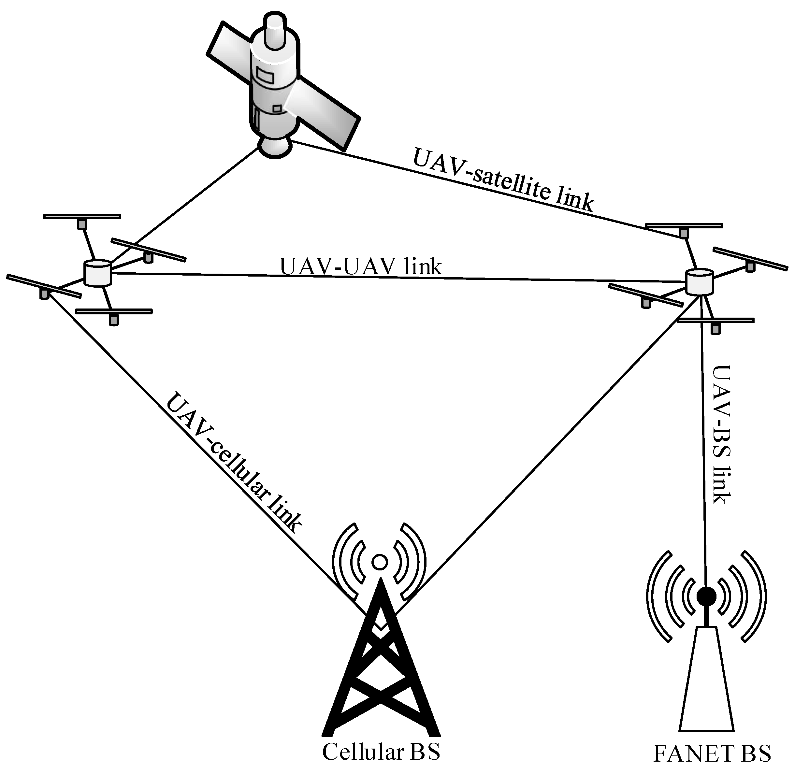

Sai Abhishek Aravind |
|
Senior Undergraduate Student,
|
 |
About Me.
Research

|
COVID-19 Public Screening System. The proposed implementation in this project suggests the use of open CV, an open-source library for computer
vision related tasks which presents a computationally inexpensive real-time solution towards this problem.
My team and I created an application that recognises when a visitor to any public place has or has not worn a mask,
and takes necessary course of action to inform authorities. This proposal made by the team is also useful for contact tracing.
This is achieved using dlib library and Haar cascade classifiers for detecting different parts of the human face. S. Abhishek, A. Sharma and S. Sivakumar, "End to End COVID-19 Public Screening System," 2021 IEEE International Conference on Electronics, Computing and Communication Technologies (CONECCT), 2021 |
|  |
IoT based Control System for Home Automation. This research proposes the use IoT (Internet of Things) technology coupled with automation,
to control hardware systems and peripherals through a custom-built web server. The embedded controller used in the proposed system is a Raspberry Pi 3b+.
This system aims at making home automation and other related automated tasks simple to build, execute, automate and monitor the usage through the World Wide Web.
By using the proposed system, it will help the end user to curb electricity costs,
by monitoring and saving the units consumed by the different peripherals in the system, and also have a positive impact on the environment. This paper has been accepted for publication at the IEEE Second International Conference on Technology, Engineering, Management for Societal impact using Marketing, Entrepreneurship and Talent. |
|
 |
FANETs: An Application Driven Survey. FANETs (Flying Ad-Hoc Networks) have been found to be useful for many fields such as agricultural tasks, military activities etc. In this research work, I have analyzed and suggested the most efficient protocol and models for each application. There are several existing routing protocols which have their own attributes. Since a single protocol cannot be used for all applications, every application will have different obstacles hence to counter each obstacle a different routing protocol will be useful in making the power consumption and message delivery much simpler, structured and hence enabling a much more efficient and easier completion of a given task. The work deals with the analysis of FANETs, the obstacles that come up with it and the most suitable protocols and their mobility models to achieve different tasks. This paper has been accepted for publication in the prestigious Lecture Notes in Electrical Engineering (SPRINGER) at VIRTUAL INTERNATIONAL CONFERENCE ON FUTURISTIC COMMUNICATION AND NETWORK TECHNOLOGIES (VICFCNT) 2021 Conference |